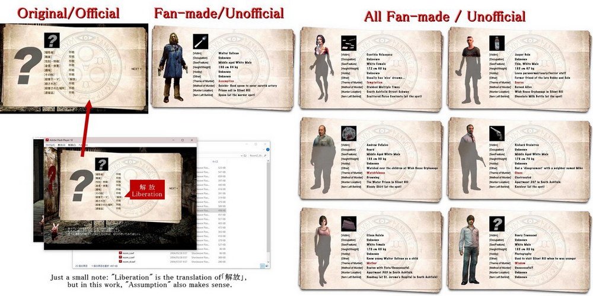
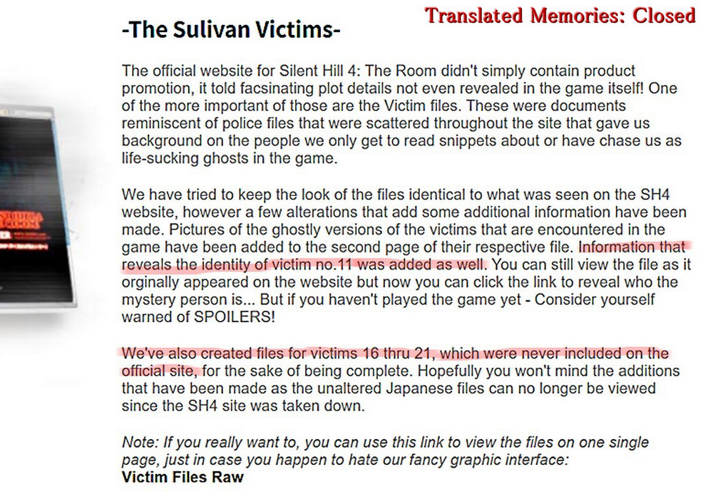
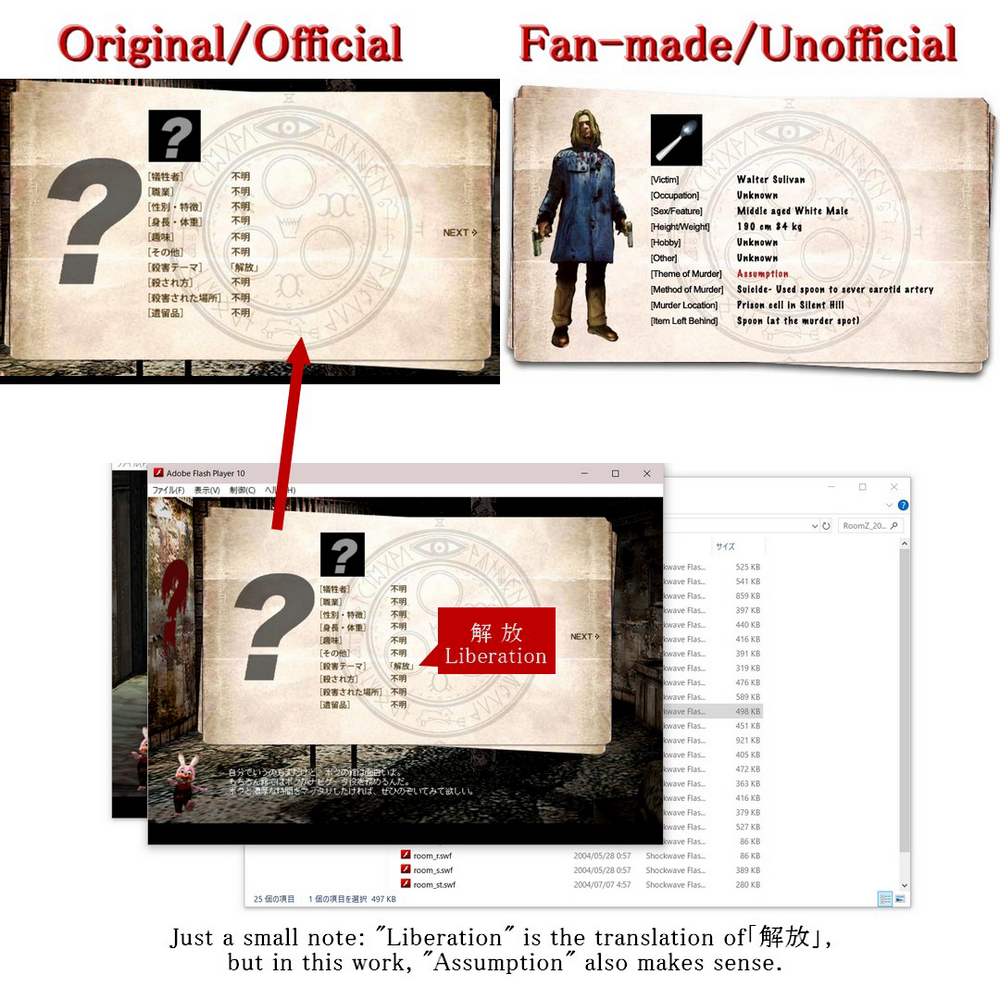
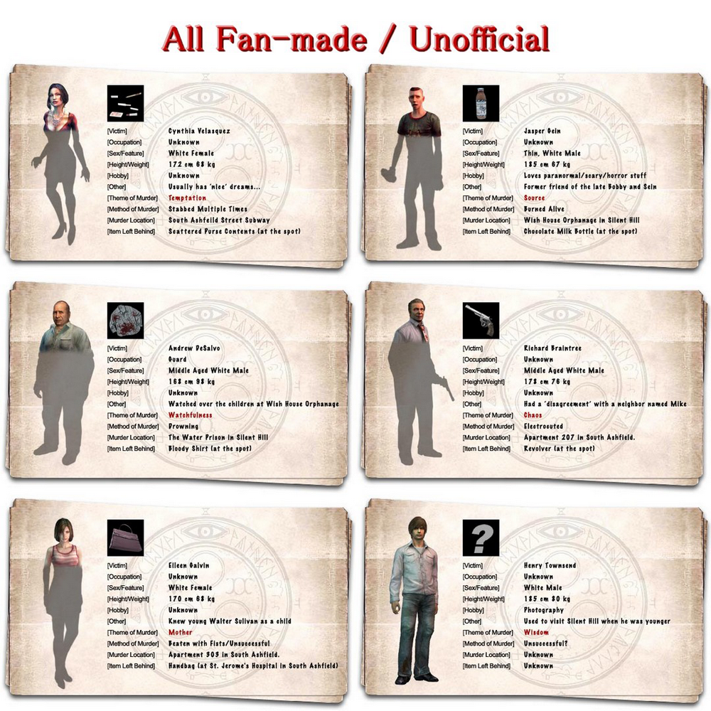
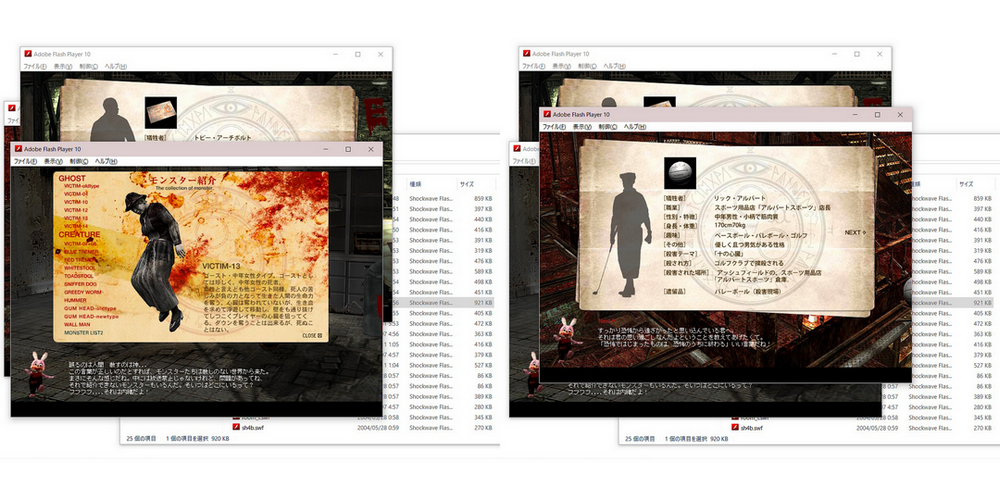
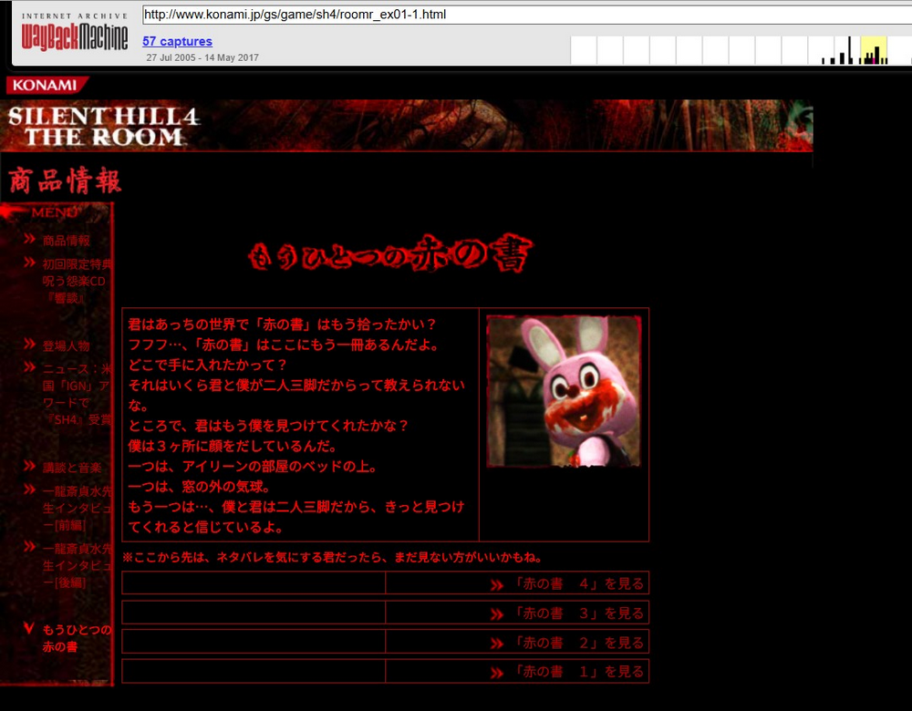
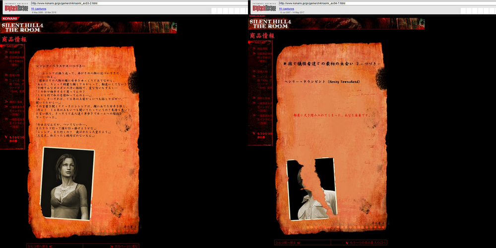
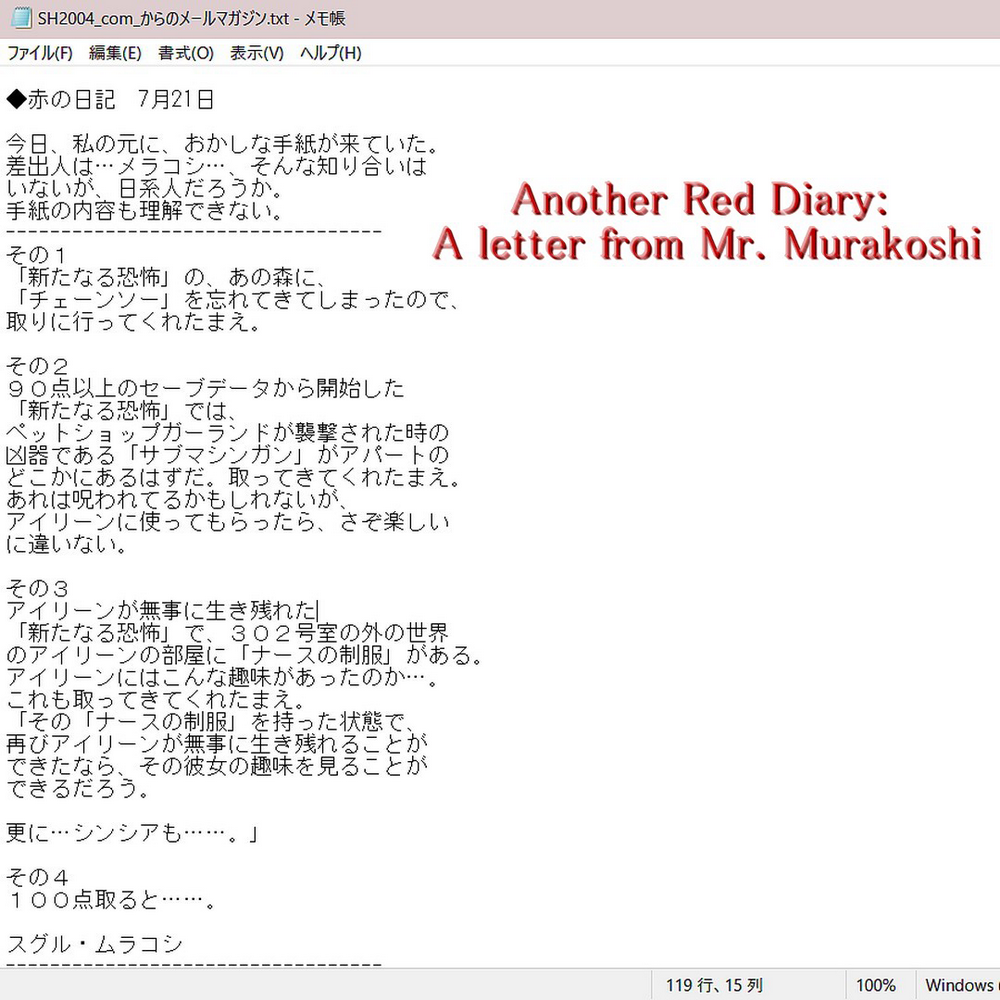

[SH4] Lost memories

Old Official Silent Hill 4 Websites and the Victim Info They Contained
![[SH4] Lost memories](img/da07.png)
This is a mirror of the DeviantArt version linked above, provided as a backup and for easier access.

The so-called "victim files" of SH4 are still around online in English and some other languages. But I'm Japanese and have been checking the official website in real-time since before SH4 was released, yet I had never seen the Japanese versions of some of these files and couldn't tell where they came from.
So to get straight to the point, about half of it was fan-made additions created by people from a once well-known translation site called "Translated Memories".
https://web.archive.org/web/20170313012450/http://www.translatedmemories.com/about.html

These were fan-made works.


Of course, the listed details like height, weight, hobbies, and jobs are all made up by fans, not official.
The admins of the Silent Hill wiki also looked into this in detail. So I won't repeat what overlaps here, but based on the process I went through while digging up the information, I'll talk about the content that was on the former Japanese official sites.
✅First, "SH2004 . com"

It relied heavily on Flash and had a puzzle-style setup, but it was shut down shortly after SH4 release in Japan. That site had the official files up through victim 15. They also had pages showing monsters, ghosts, weapons, and items.
Sadly, the SWF files can't be found in web archives.

As I mentioned at the beginning, the Silent Hill wiki admins, who were investigating this matter, translated the victim files. You can find that translation on the following site.
https://silenthill.fandom.com/wiki/Victim_files_(Silent_Hill_4:_The_Room)
I've reviewed this page myself, and they've translated the official Japanese information very accurately. It's also been organized into a list, making it very easy to read!
✅ Second, "Another Crimson Tome もうひとつの赤の書"

This was on the official SH4 website after "SH2004 . com" was closed. It even included info 16 through 21. This too got translated into English and is still available now.
https://web.archive.org/web/20070609090717/http://www.konami.jp/gs/game/sh4/roomr_ex01-1.html

The official SH4 website also had greeting from the dev team after the release and some tips for the game. There's also a message from Director Murakoshi-san saying that "SH4 was created with the concept of making a new Silent Hill."
📌Related: Japanese Source: Silent Hill 4 Project Launched as a "Silent Hill" from the Start
Additional details;
Team Silent was a team within "Konami Computer Entertainment Tokyo コナミコンピュータエンタテインメント東京 ," a subsidiary of Konami. They operated their own independent website called "konamityo . com"
On April 1, 2005, "Konami Computer Entertainment Tokyo" was absorbed due to Konami's corporate reorganization. As a result, the Team Silent was dissolved, and "konamityo . com" was merged into the "konami . jp" site.
That's why, if you search the Web Archive using "konamityo . com/sh4/," you'll find the same articles among pages archived from before 2005.
Official Info
SH2004 . com : Victims 1–15
Another Crimson Tome : Victims 16–21
✅ Apart from these, there was also a Japanese newsletter called "Another Red Diary 赤の日記" in the official info. Only copied versions of the text exist in Japanese and English.

The Silent Hill wiki only has translations for the main entries.